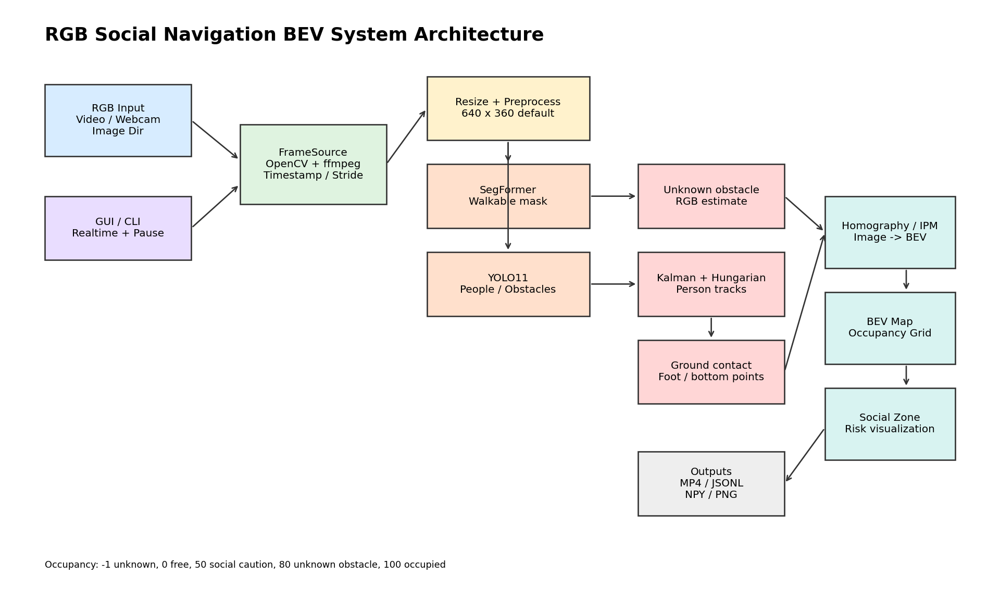
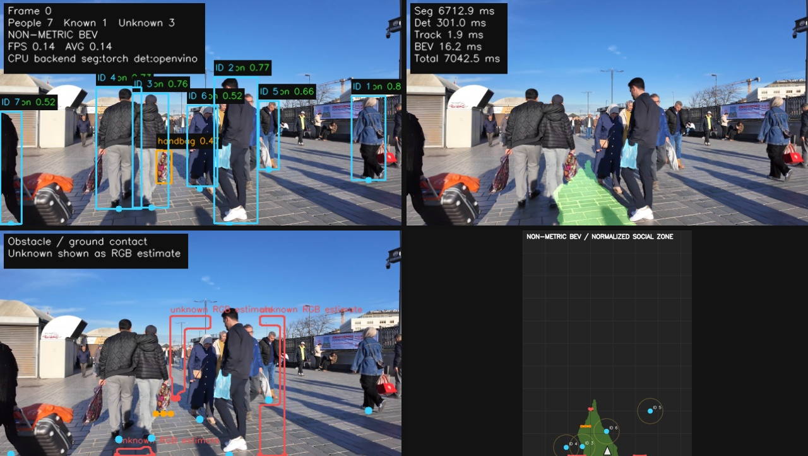
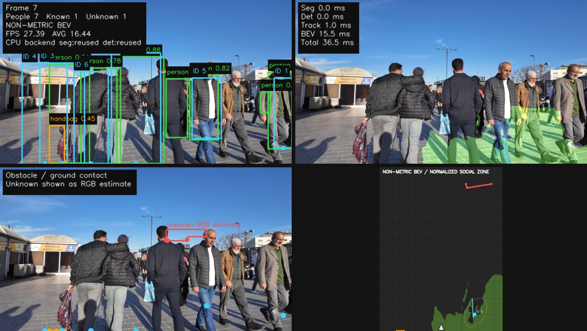
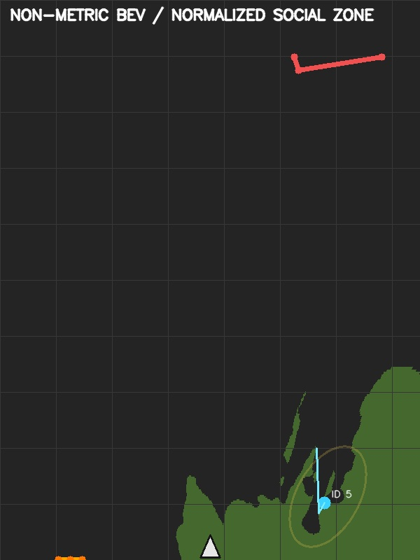
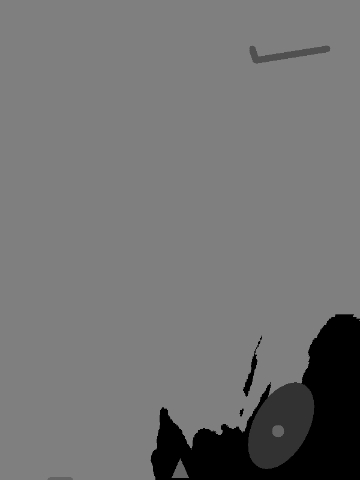
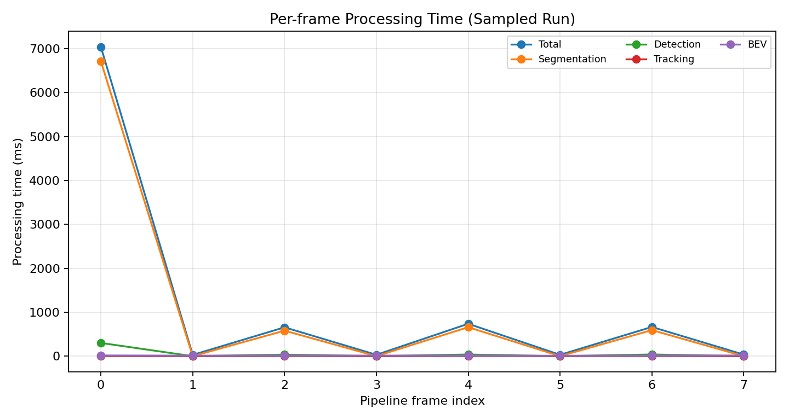
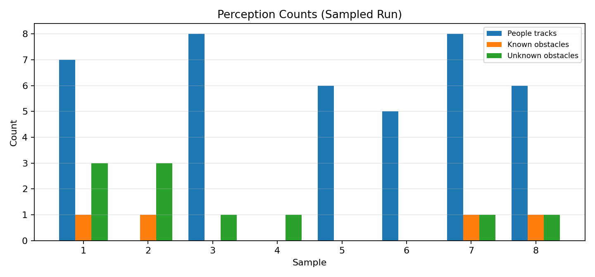

本任務建立並驗證一套以單目 RGB 影像為輸入的社會導航 BEV 感知系統。系統能從影片或即時相機逐幀讀取 RGB frame，進行可行走區域分割、人員與障礙物偵測、多人追蹤、未知障礙物估測，最後透過 homography / IPM 投影至鳥瞰圖，輸出 social zone、occupancy grid、2x2 視覺化影片與逐幀 JSONL 結果。
本報告使用 data/15659193_3840_2160_60fps.mp4 進行抽樣測試。由於目前未提供實際場地校正檔，BEV 結果以非公尺尺度顯示；若要量測實際距離與 social zone 半徑，需先建立 configs/calibration.yaml。
此系統的目標不是取代深度相機或 LiDAR，而是在只有 RGB 相機的條件下，提供社會導航所需的環境理解與風險可視化資訊。主要使用情境包含：
系統由輸入層、runtime 控制、CPU perception pipeline、BEV 投影與輸出層構成。GUI 提供 Start / Pause / Stop 與 realtime playback；Pause 會在下一張 frame 進入推論前停住，因此不會繼續累積離線預算。

| 模組 | 功能 | 實作檔案 |
|---|---|---|
| FrameSource | 支援 webcam、影片、圖片資料夾與單張圖片；OpenCV 讀取失敗時可用 ffmpeg fallback。 | social_bev/frame_source.py |
| WalkableSegmenter | 使用 SegFormer 產生可行走區域 mask，模型失敗時可退回 RGB heuristic。 | social_bev/segmentation.py |
| ObjectDetector | 使用 YOLO11 偵測 person 與已知障礙物；無 OpenVINO IR 時使用 yolo11n.pt CPU fallback。 | social_bev/detection.py |
| MultiObjectTracker | 以 Kalman filter 與 Hungarian matching 維持 person track ID 與短期軌跡。 | social_bev/tracking.py |
| BEVMapBuilder | 整合 walkable mask、obstacle、track 與 social zone，產生 BEV image 與 occupancy grid。 | social_bev/bev_map.py |
| 輸入影片 | data/15659193_3840_2160_60fps.mp4 |
| 影片解析度 / FPS | 3840 x 2160 / 59.94 FPS |
| 抽樣方式 | 每 60 frames 取 1 frame，共處理 8 個 sample。 |
| Pipeline input size | 640 x 360 |
| Segmentation | torch backend, SegFormer ADE20K |
| Detection | openvino configured; runtime fallback to yolo11n.pt because OpenVINO YOLO IR is not present. |
| Seg / Det interval | segmentation interval = 2, detection interval = 2 |
| Calibration | 未提供 calibration YAML，因此使用 NON-METRIC BEV。 |
說明：抽樣測試用於產生代表性報告圖與效能數據。若完整處理 763 frames，CPU 環境會耗費較長時間，且不代表即時相機的低延遲設定。
以下圖片由指定影片實際執行 pipeline 取得。2x2 視覺化依序包含：原圖偵測與 track ID、walkable mask 疊圖、障礙物/ground contact、BEV occupancy 與 social zone。




| 處理 sample 數 | 8 |
| 總 wall time | 19.08 s |
| Wall average FPS | 0.419 FPS，包含模型初始化與抽樣 decode。 |
| Mean processing time | 1153.5 ms/frame |
| Median processing time | 346.7 ms/frame |
| Pipeline mean FPS | 16.44 FPS，受 interval reuse 影響。 |
| 平均人員 track 數 | 5.00，最多 8 |
| 平均 unknown obstacle 數 | 1.25，最多 3 |
| 平均 walkable ratio | 7.01% |


| Frame | Time (s) | People tracks | Known obs. | Unknown obs. | Walkable | Total ms | FPS |
|---|---|---|---|---|---|---|---|
| 0 | 0.00 | 7 | 1 | 3 | 3.3% | 7042.5 | 0.14 |
| 1 | 1.00 | 0 | 1 | 3 | 3.3% | 28.6 | 34.91 |
| 2 | 2.00 | 8 | 0 | 1 | 3.3% | 656.8 | 1.52 |
| 3 | 3.00 | 0 | 0 | 1 | 3.3% | 31.1 | 32.20 |
| 4 | 4.00 | 6 | 0 | 0 | 9.3% | 737.0 | 1.36 |
| 5 | 5.00 | 5 | 0 | 0 | 9.3% | 30.7 | 32.53 |
| 6 | 6.01 | 8 | 1 | 1 | 12.1% | 664.6 | 1.50 |
| 7 | 7.01 | 6 | 1 | 1 | 12.1% | 36.5 | 27.39 |
| 數值 | 語意 | 用途 |
|---|---|---|
| -1 | unknown | RGB 無法確認或未投影區域。 |
| 0 | free | 由 walkable mask 投影得到的可行走區域。 |
| 50 | social caution | 行人周圍 social zone，導航應提高避讓權重。 |
| 80 | unknown obstacle | 低信心 RGB 未知障礙物估測。 |
| 100 | occupied | 人、已知障礙物或 robot footprint。 |
主要輸出包含 outputs/*.mp4 2x2 視覺化影片、outputs/*.jsonl 逐幀結構化資料，以及 outputs/*_occupancy/frame_*.npy/.png 的 occupancy grid。
tools/calibrate_ipm.py 完成場地校正。input_width/input_height、segmentation_interval、detection_interval。cd /home/laiting/Desktop/NTHU_HRC_lab/itri_safty_descision/rgb_social_navigation_bev python gui.py
cd /home/laiting/Desktop/NTHU_HRC_lab/itri_safty_descision/rgb_social_navigation_bev python -m social_bev.run --input data/15659193_3840_2160_60fps.mp4 --config configs/default.yaml --output outputs/real_social_navigation_result.mp4 --jsonl outputs/real_social_navigation_results.jsonl --occupancy-dir outputs/real_social_navigation_occupancy --device cpu
python -m social_bev.run --input 0 --config configs/default.yaml --output outputs/webcam_social_bev.mp4 --jsonl outputs/webcam_social_bev.jsonl --occupancy-dir outputs/webcam_social_bev_occupancy --device cpu
本系統已完成從 RGB frame source 到 social navigation BEV visualization 的端到端流程，能在 CPU 環境下對真實人群影片進行 walkable segmentation、person detection/tracking、unknown obstacle estimation、BEV occupancy rendering 與 JSONL/影片輸出。實驗結果顯示系統可線上逐幀運作並產生可檢視的社會導航風險圖，但若要部署於即時機器人，需要進一步完成 metric calibration、模型加速與 latest-frame 低延遲策略。